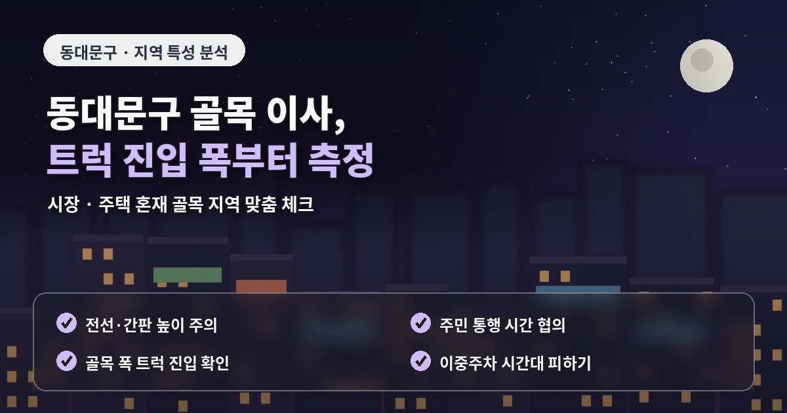
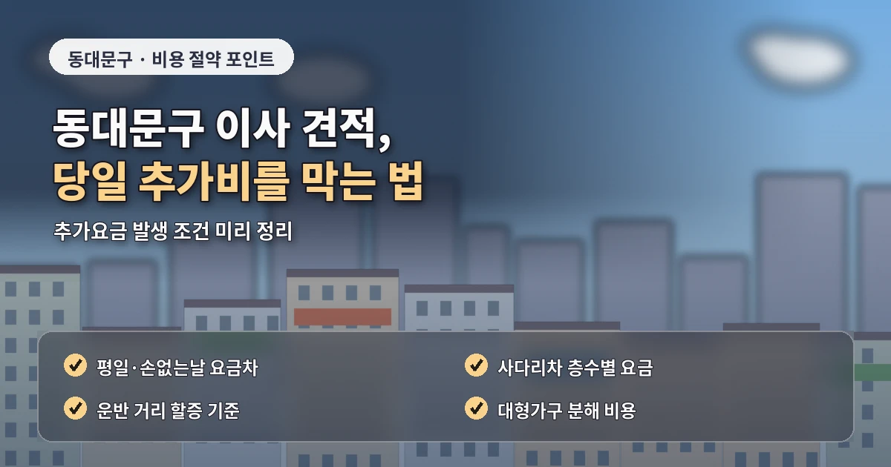
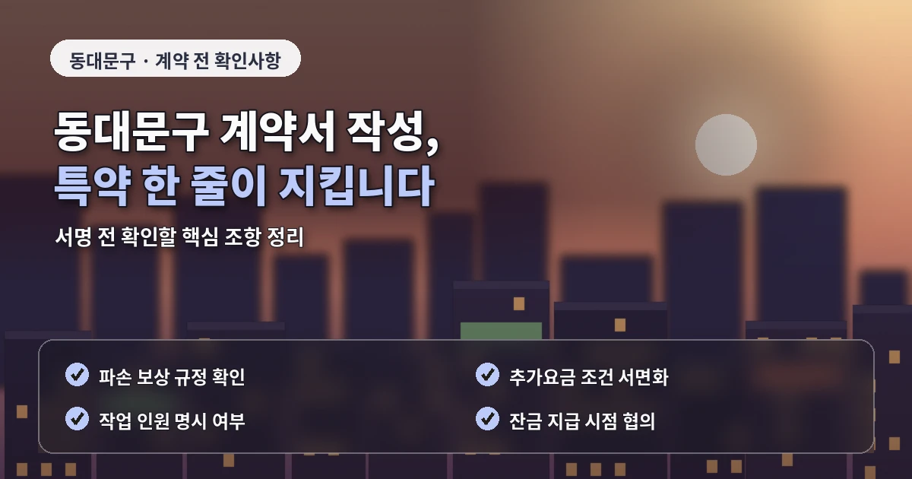

서울 동대문구포장이사추천 시장 주변 견적 기준
동대문구 포장이사는
역세권 주거지와 오래된 건물,
시장 주변 생활권이 함께 있어
작업 조건을 세밀하게 확인해야 합니다.
장안동은 아파트와 빌라가 섞여 있고,
답십리동과 전농동은 주거 단지가 넓게 형성되어 있으며,
청량리동은 역세권과 상권이 함께 있어
차량 대기와 이동 동선이 중요합니다.

동대문구 포장이사 비용은
평수와 짐의 양만으로 판단하기 어렵습니다.
견적이 달라지는 현장 조건
건물 앞 주차 가능 여부,
엘리베이터 크기,
계단 폭,
상가 주변 차량 통행,
사다리차 설치 가능 공간이
실제 견적에 영향을 줄 수 있습니다.
특히 시장이나 상권이 가까운 지역은
작업 차량이 오래 대기하기 어려울 수 있습니다.
이 경우 운반 거리가 길어지고
작업 시간이 늘어날 수 있어
상담 단계에서 도로 상황을 미리 알려주는 것이 좋습니다.
오래된 건물이 많은 곳에서는
엘리베이터가 작거나
계단 폭이 좁은 경우가 있습니다.

냉장고, 세탁기, 장롱,
침대 프레임처럼 부피가 큰 물건은
이동 경로를 먼저 확인해야 합니다.
업체 비교 전 확인할 기준
가능하면 현관, 계단, 복도 사진을 보내면
업체가 필요한 인원과 장비를 더 정확히 판단할 수 있습니다.
동대문구 포장이사 업체추천을 볼 때는
작업 경험의 범위를 확인하는 것이 좋습니다.
대단지 아파트만 많이 진행한 업체와
시장 주변 빌라, 상가주택 작업에 익숙한 업체는
현장 대응 방식이 다를 수 있습니다.
비용이 저렴해 보여도
장거리 운반비나 계단 운반비가 빠져 있다면
최종 금액은 달라질 수 있습니다.
포장이사 비교견적은
최소 3곳 이상 받아보되
같은 조건으로 문의해야 합니다.
출발지와 도착지의 층수,
엘리베이터 사용 가능 여부,
차량 진입 가능 여부,
사다리차 필요 여부,
가구 분해 조립 범위를
모든 업체에 동일하게 알려야 정확한 비교가 가능합니다.

추가비용을 줄이는 준비 순서
이사 전에는 버릴 물건을 먼저 정리하는 것이 좋습니다.
동대문구처럼 건물 구조와 도로 상황이 다양한 지역은
짐의 양이 줄어들수록
작업 시간이 줄어들 가능성이 있습니다.
책, 의류, 오래된 가구,
사용하지 않는 소형가전을 미리 정리하면
박스 수와 차량 크기 선택에도 도움이 됩니다.
계약 전에는 최종 견적서에
작업 인원, 차량 대수, 포장 범위,
보양 범위, 추가비 조건,
파손 보상 기준이 포함되어 있는지 확인해야 합니다.
말로만 안내받은 내용은
현장 상황에 따라 달라질 수 있으므로
중요한 조건은 문자나 문서로 남겨두는 것이 안전합니다.
동대문구 포장이사는
시장 주변 도로와 오래된 건물 구조까지 고려해야
실제 상황에 맞는 견적을 받을 수 있습니다.
계약 전에 남겨둘 내용
가격만 비교하기보다
차량 동선, 건물 구조,
작업 인원, 추가비 기준을 함께 살피면
더 안정적인 포장이사 준비가 가능합니다.
동대문구 포장이사에서
놓치기 쉬운 부분은 도착지 조건입니다.
출발지는 차량 진입이 쉬워도
도착지가 골목 안쪽이거나 상가주택이면
운반 방식이 달라질 수 있습니다.
반대로 출발지는 오래된 빌라이지만
도착지가 대단지 아파트라면
엘리베이터 예약과 보양 기준이 더 중요해집니다.
따라서 상담할 때는 양쪽 주소의 조건을
같은 수준으로 설명해야 합니다.
이사 날짜도 비용과 연결됩니다.
주말, 월말, 손 없는 날은 문의가 몰려
원하는 시간대 확보가 어려울 수 있습니다.
일정 조정이 가능하다면 평일이나 월중 날짜를 함께 문의하고,
오전 작업과 오후 작업의 차이도 확인해보는 것이 좋습니다.
동대문구 포장이사추천 정보를 활용할 때는
단순 후기보다 견적 항목이 자세히 정리되어 있는지 살피는 것이 좋습니다.
작업 기준이 명확한 업체일수록
이사 당일 현장 변수에 대응하기 쉽고
추가비용 안내도 더 투명하게 받을 수 있습니다.
동대문구는 청량리와 전농동 주변처럼
재개발 이후 주거 환경이 달라진 곳과
기존 상권이 남아 있는 지역이 함께 있습니다.
따라서 같은 동대문구라도 이사 방식은 단지별로 달라질 수 있습니다.
업체에 주소를 전달할 때는 건물명만 말하기보다
차량 진입로, 관리사무소 연락 여부, 엘리베이터 사용 조건을 함께 정리하는 것이 좋습니다.
또한 시장 주변이나 상가주택은 작업 시간대 선택이 중요합니다.
영업 시간과 겹치면 차량 대기가 어려워질 수 있고,
주변 통행량 때문에 운반 동선이 길어질 수 있습니다.
이런 변수까지 반영한 견적이 실제 이사 비용에 더 가깝습니다.
자주 묻는 질문
A. 차량 대기 위치, 운반 거리, 상가 주변 통행량을 먼저 확인하는 것이 좋습니다.
A. 계단 폭과 엘리베이터 크기를 확인해야 하므로 방문견적이나 사진 전달이 유리합니다.
A. 짐을 미리 정리하고 장거리 운반, 계단 작업, 사다리차 여부를 견적 단계에서 확인해야 합니다.